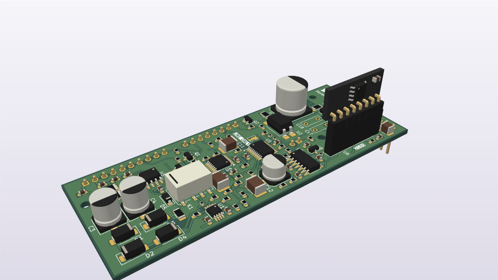
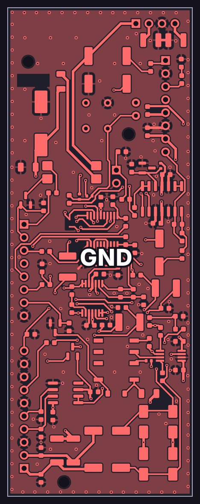
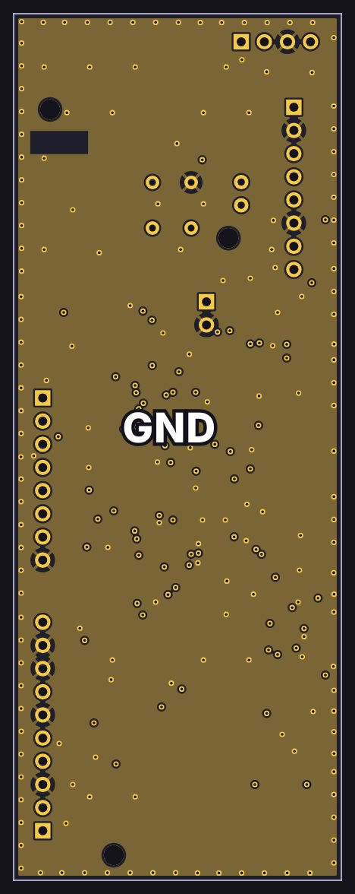
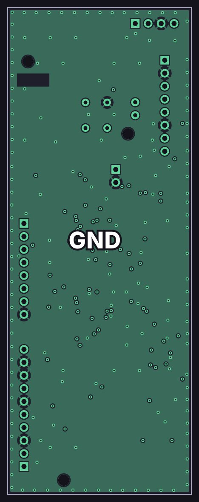
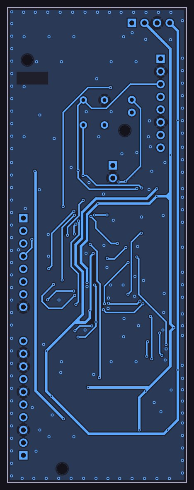
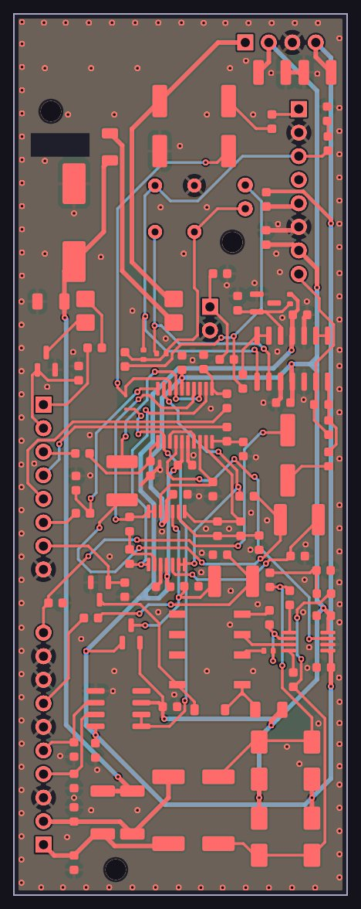

Input card

How it works
A simplified schematic: just the signal path, with the details left out. Dashed lines are control voltages from the console’s controller.
Design notes
- Three front ends: an INA849 mic preamp (+40 dB fixed, or +20 dB with a relay pad), an INA137 line receiver (−6 dB) and a 1 MΩ instrument buffer (+6 dB).
- An ADG1434 switch picks the source, flips the polarity and switches in a 90 Hz, 12 dB/octave low-cut.
- An AS2180 dB-linear VCA sets the gain under DAC control, from −76 to +27 dB, with 0 V as mute.
- A fixed-gain preamp plus a VCA, rather than a variable-gain preamp: the preamp stays at a low-noise gain and all fine gain control happens in the VCA.
- Phantom power is interlocked in hardware: +48 V needs two logic lines high and is switched by an AQY210 solid-state relay, so a single stuck line can’t put 48 V on a line or instrument input.
- The end-of-life THAT1512 preamp and THAT2180 VCA were replaced by the INA849 and AS2180.
- An NTC thermistor bonded to the VCA cancels its temperature drift.
The copper layers
All 4 copper layers of the board, top to bottom, drawn from the KiCad layout: 2 signal layers and 2 ground planes, labeled GND.
-

Top F.Cu
Signal layer: parts, signal traces and +15 V, +48 V, −15 V, −2.5 V power traces
-

Inner 1 In1.Cu
Ground plane (GND)
-

Inner 2 In2.Cu
Ground plane (GND)
-

Bottom B.Cu
Signal layer: signal traces and +15 V, −15 V power traces
-

All layers
Every copper layer stacked, top on top
See schematics